10 How to plot data
How to plot data? This is a big question, and here I can give a quick/brief answer, which is this two-step procedure. Step 1: Get the data ready. Step 2: Use ggplot2 package (or another package, e.g. treemap package, for some a specific plot). In the following 13 sections, I will use examples to illustrate the two-step procedure.
10.1 Creating basic bar charts
Essentially, a basic bar chart is a plot of a categorical variable on x-axis and a numerical variable on y-axis.
Example 1: a basic bar chart.
rm(list = ls())
# load packages
library(ggplot2)
# prepare a dataframe for plotting
fruits <- c("apple", "orange", "banana")
the_fruits <- sample(fruits, 100, replace = TRUE)
plotting_df <- as.data.frame.table(table(the_fruits))
# plotting
p <- ggplot(plotting_df, aes(x = the_fruits, weight = Freq)) +
# NB: use "weight = Freq" instead of "y = Freq"
geom_bar(width = 0.5, fill = "blue") +
# NB: use "width" and "fill" to change the default bar width and color
labs(x = "", y = "Frequency",
title = "A basic bar chart for a basket of fruits") +
theme(plot.title = element_text(hjust = 0.5)) +
# NB: use theme to center the title
geom_text(aes(x = the_fruits, y = Freq + 1, label = Freq))
# NB: use "geom_text" to put the the numbers to indicate heights of bars
print(p)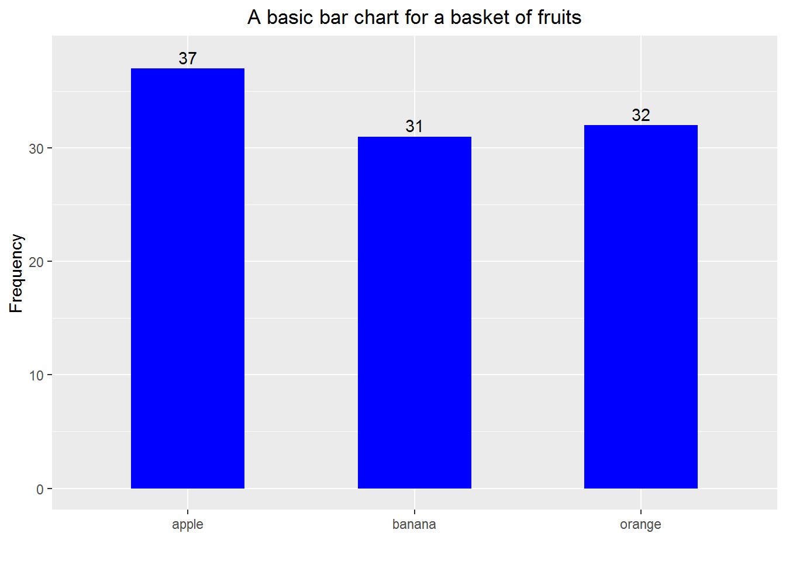
Example 2: still a basic bar chart but making the bars horizontal and based on percentage
rm(list = ls())
# load packages
library(ggplot2)
library(dplyr)
# prepare a dataframe for plotting
fruits <- c("apple", "orange", "banana", "pear", "plum",
"kiwi fruit", "peach", "mango", "lemon")
the_fruits <- sample(fruits, 1000, replace = TRUE)
a_table <- table(the_fruits)
plotting_df <-
as.data.frame.table(a_table) %>%
mutate(proportion = Freq / sum(Freq))
## Create a vector to order the fruits in terms of proportion
for_sorting <- plotting_df %>%
arrange(proportion)
fruits_order <- for_sorting$the_fruits
# plotting
p <- ggplot(plotting_df, aes(x = the_fruits, weight = proportion)) +
# NB: use "weight = proportion" instead of "y = proportion"
geom_bar(width = 0.5, fill = "blue") +
# NB: use "width" and "fill" to change the default bar width and color
labs(x = "", y = "",
title = "A 'horizontal' bar chart for a basket of fruits") +
coord_flip() +
# NB: use "coord_flip" to flip coordinates
scale_x_discrete(limits = fruits_order) +
# NB: use the above to set the order of bars
scale_y_continuous(limits = c(0, max(plotting_df$proportion)+0.015)) +
# NB: use the above to make the plot slightly bigger than the default one
geom_text(aes(x = the_fruits, y = proportion + 0.006,
label = scales::percent(proportion))) +
# NB: use the above to put the the pentage numbers to indicate lengths of bars
theme(plot.title = element_text(hjust = 0.5),
axis.text.x = element_blank(),
axis.ticks = element_blank())
# NB: use theme to center the title, to remove axis text and ticks
print(p)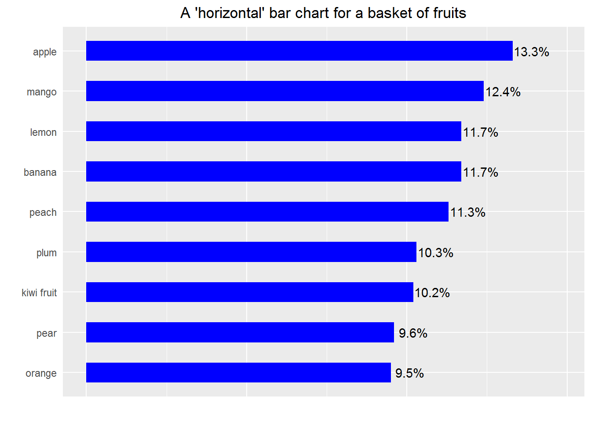
10.2 Creating side-by-side and stacked bar charts
Example 3
rm(list = ls())
# load packages
library(ggplot2)
library(dplyr)
#-------------------
# Aim: To plot numbers of all kinds of fruits in "local" and "imported" groups
#-------------------
# prepare a dataframe for plotting
fruits <- c("apple", "orange", "banana", "pear", "plum",
"kiwi fruit", "peach", "mango", "lemon")
origin <- c("local", "imported")
a_df <- data.frame(the_fruits = sample(fruits, 1000, replace = TRUE),
the_origin = sample(origin, 1000, replace = TRUE))
plotting_df <-
a_df %>%
group_by(the_origin, the_fruits) %>%
summarise(Freq = n())
# ------------ side-by-side bar chart --------------
## set the order of bars according to local fruits
temp_df_1 <-
plotting_df %>%
filter(the_origin == "local") %>%
arrange(Freq)
the_order <- temp_df_1$the_fruits
## plot a side-by-side bar chart
p1 <-
plotting_df %>%
ggplot(aes(x = the_fruits, weight = Freq, fill = the_origin)) +
geom_bar(position = "dodge", width = 0.75) +
# NB: use the above to plot bars in the certain order
coord_flip() +
scale_x_discrete(limits = the_order) +
labs(x = "", y = "Number of fruits in the 'basket'") +
scale_fill_brewer(breaks=c("local", "imported"), palette = "Set1") +
# NB: use the above to change the default order and color of legend
theme(legend.position = "bottom",
legend.title = element_blank(),
axis.text = element_text(size=12),
axis.title = element_text(size=14),
plot.title = element_text(size=14),
legend.text = element_text(size=9),
panel.background = element_rect(fill = "grey90"))
print(p1)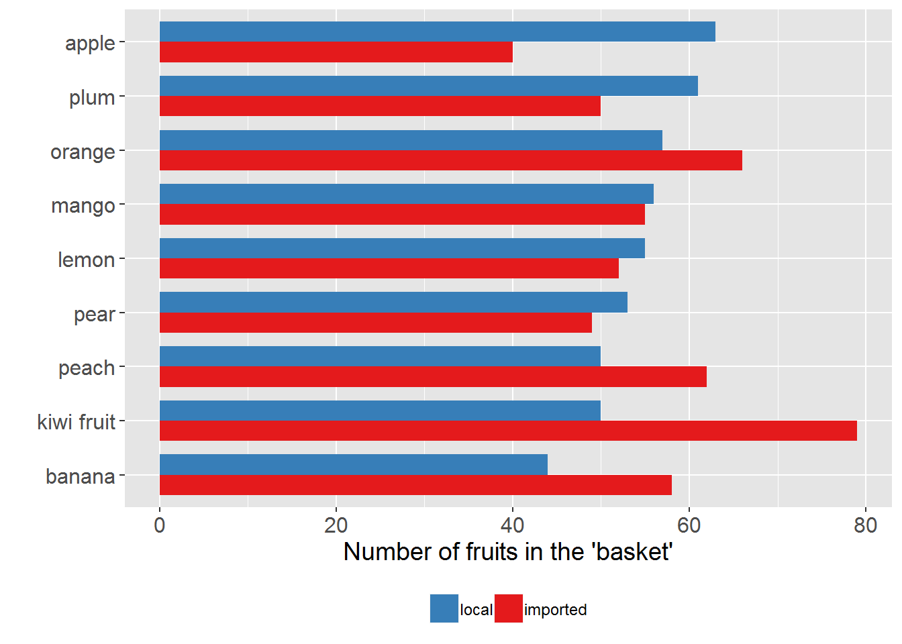
# ------------ stacked bar chart --------------
## set the order according to totals
temp_df_2 <-
a_df %>%
group_by(the_fruits) %>%
summarise(the_count = n()) %>%
arrange(the_count)
the_order_2 <- temp_df_2$the_fruits
## plot a stacked bar chart
p2 <-
plotting_df %>%
ggplot(aes(x = the_fruits, y = Freq, group = the_origin, fill = the_origin)) +
# NB: use "y = Freq" instead of "weight = Freq"
geom_bar(stat = "identity", position = "stack", width = 0.75) +
coord_flip() +
scale_x_discrete(limits = the_order_2) +
# NB: use the above to plot the bars in order
labs(x = "", y = "Number of fruits in the 'basket'") +
scale_fill_brewer(breaks=c("local", "imported"), palette = "Set1") +
# NB: use the above to change the default order and color of legend
theme(legend.position = "bottom",
legend.title = element_blank(),
axis.text = element_text(size=12),
axis.title = element_text(size=14),
plot.title = element_text(size=14),
legend.text = element_text(size=9),
panel.background = element_rect(fill = "grey90"))
print(p2)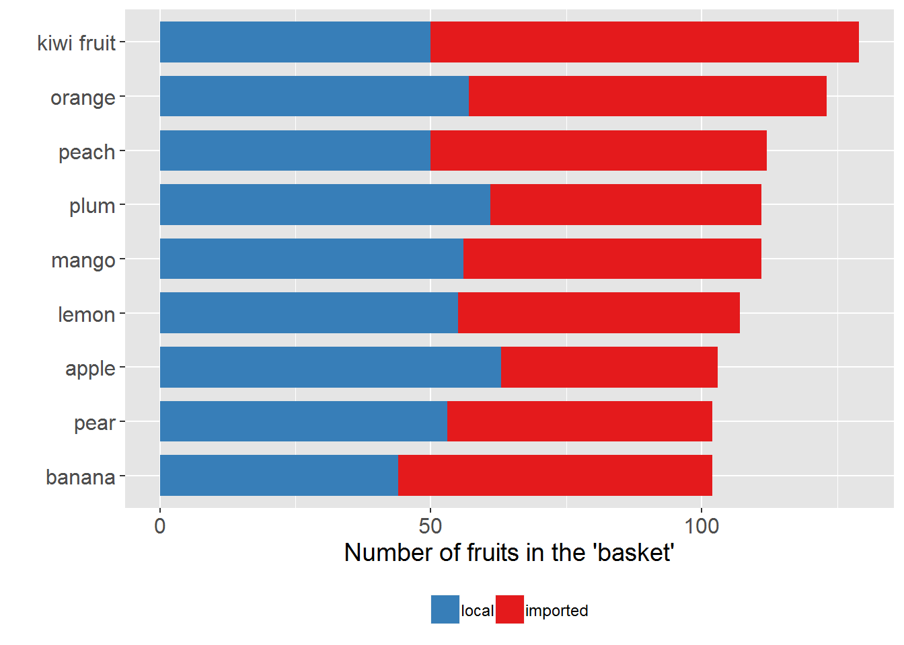
10.3 Creating back-to-back bar charts
Example 4
rm(list = ls())
# load packages
library(dplyr)
library(ggplot2)
# create a fake data set
## some preparation
set.seed(123)
ten_positive_rand_numbers <- abs(rnorm(10)) + 0.1
the_prob <- ten_positive_rand_numbers / sum(ten_positive_rand_numbers)
fk_data <- data.frame(job_type = sample(LETTERS[1:10], 1000,
replace = TRUE, prob = the_prob),
gender = sample(c("Male", "Female"), 1000,
replace = TRUE))
# prepare data for plotting
plotting_df <-
fk_data %>%
group_by(job_type, gender) %>%
summarise(Freq = n()) %>%
# a trick!
mutate(Freq = if_else(gender == "Male", -Freq, Freq))
## find the order
temp_df <-
plotting_df %>%
filter(gender == "Female") %>%
arrange(Freq)
the_order <- temp_df$job_type
# plot
p <-
plotting_df %>%
ggplot(aes(x = job_type, y = Freq, group = gender, fill = gender)) +
geom_bar(stat = "identity", width = 0.75) +
coord_flip() +
scale_x_discrete(limits = the_order) +
# another trick!
scale_y_continuous(breaks = seq(-150, 150, 50),
labels = abs(seq(-150, 150, 50))) +
labs(x = "Job type", y = "Count", title = "Back-to-back bar chart") +
theme(legend.position = "bottom",
legend.title = element_blank(),
plot.title = element_text(hjust = 0.5),
panel.background = element_rect(fill = "grey90")) +
# reverse the order of items in legend
# guides(fill = guide_legend(reverse = TRUE)) +
# change the default colors of bars
scale_fill_manual(values=c("red", "blue"),
name="",
breaks=c("Male", "Female"),
labels=c("Male", "Female"))
print(p)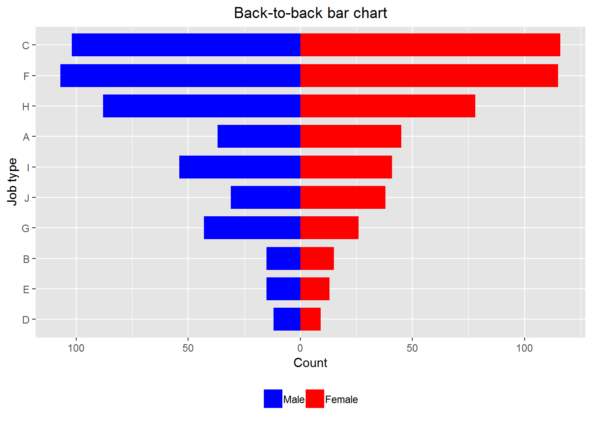
Remark: We can use
scale_x_discrete(limits = rev(the_order))to replace
scale_x_discrete(limits = the_order)and the resulted chart is also called pyramid chart. If you google “population pyramid” you can find more examples of pyramid charts.
10.4 Creating Pareto charts
A Pareto chart basically is a bar chart (with the bars ordered) plus a frequency polygon (i.e. a line chart). It is useful for revealing something like the 80-20 rule—e.g. 80% of the accidents are due to 20% of the possible reasons. See https://en.wikipedia.org/wiki/Pareto_chart for more details. The following example shows how to make a Pareto chart. Please pay attention to how the layers are built up.
Example 5
rm(list = ls())
# load packages
library(dplyr)
library(ggplot2)
# create a fake data set
reasons <- c("Reason A", "Reason B", "reason C",
"Reason D", "Reason E", "reason F")
set_prob <- c(0.1, 0.2, 0.6, 0.05, 0.02, 0.03)
fk_data <-
data.frame(accident_NO = 1:1000,
reason = sample(reasons, 1000, replace = TRUE, prob = set_prob))
# prepare the data for plotting
plotting_df <-
fk_data %>%
group_by(reason) %>%
summarise(freq = n()) %>%
arrange(desc(freq)) %>%
mutate(relative_freq = freq / sum(freq),
cumulative_freq = cumsum(relative_freq))
## get the order of bars
the_order <- plotting_df$reason
# plot
p <-
plotting_df %>%
ggplot(aes(x = reason, weight = relative_freq)) +
geom_bar(width = 0.5, fill = "blue") +
scale_x_discrete(limits = the_order) +
scale_y_continuous(label = scales::percent) +
geom_point(aes(x = reason, y = cumulative_freq)) +
geom_line(aes(x = reason, y = cumulative_freq, group = 1)) +
# NB: Must use "group = 1"
labs(x = "", y = "Relative frequency",
title = "A Pareto diagram for reasons of 1000 accidents") +
theme(plot.title = element_text(hjust = 0.5))
# NB: Use theme to center the title
print(p)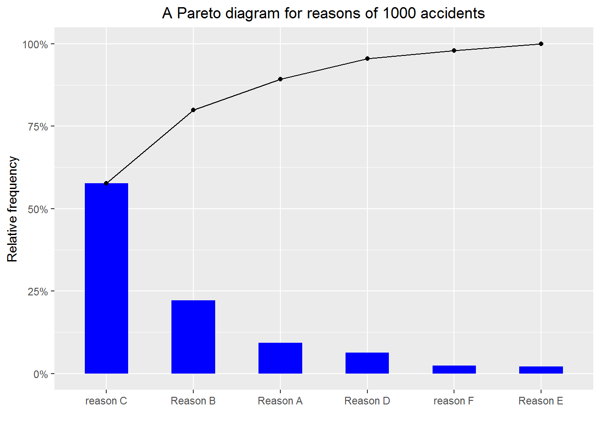
10.5 Creating lollipop charts
Notice that \[ \hbox{a lollipo} = \hbox{a segment} + \hbox{a point}, \] thus it is natural to use geom_segment() and geom_point() to create lollipop charts.
Example 6
rm(list = ls())
library(ggplot2)
library(dplyr)
# create a fake data set
set.seed(9072017)
rand_numbers <- abs(rnorm(26))
the_prob <- rand_numbers/sum(rand_numbers)
fk_data <- data.frame(x = sample(LETTERS, 10000, replace = TRUE,
prob = the_prob))
# prepare data for plotting
plotting_df <-
fk_data %>%
group_by(x) %>%
summarise(Freq = n()) %>%
mutate(proportion = Freq/sum(Freq)) %>%
arrange(proportion)
the_order <- plotting_df$x
# plotting
p <-
plotting_df %>%
ggplot(aes(x = x, y = proportion)) +
geom_segment(aes(x = x, xend = x, y = 0, yend = proportion)) +
# use the above to plot segments
geom_point() +
# use the above to plot points
scale_x_discrete(limits = the_order) +
scale_y_continuous(labels = scales::percent) +
labs(x = "Category", y = "Proportion",
title = "A lollipop chart") +
theme(plot.title = element_text(hjust = 0.5))
# use the above to center the title
print(p)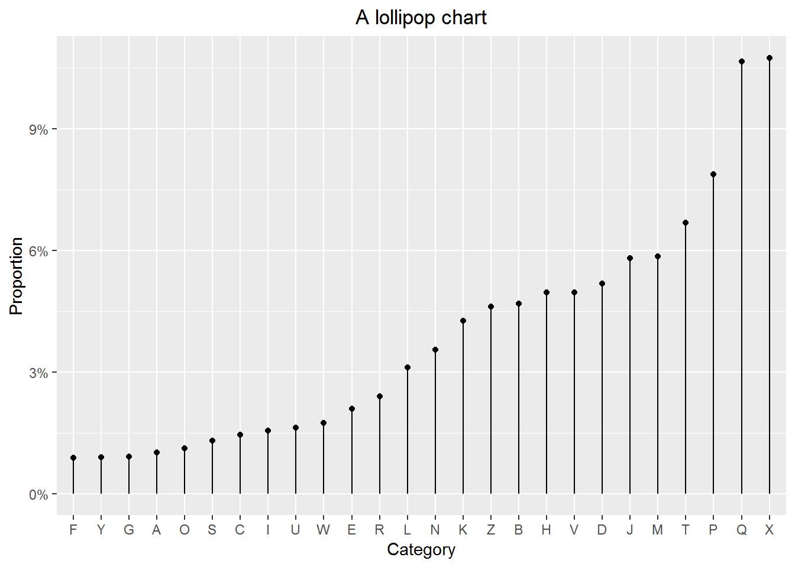
10.6 Creating treemaps
A treepmap can show three variables by using lables, sizes of rectangles and colors. Below is a treemap of the top 15 NZ’s most populous cities based on the 2016 data. The original data comes from: https://en.wikipedia.org/wiki/List_of_cities_in_New_Zealand
Example 7
rm(list = ls())
# load packages
library(treemap)
library(readr) # for read_csv
# read data in
the_url <- "https://raw.githubusercontent.com/LarryZhang2016/Data/master/NZ_cities.csv"
NZ_cities <- read_csv(the_url, skip =1)
# make a tree map
treemap(dtf = NZ_cities,
index=c("City_name"),
vSize="Population",
vColor="Population_density",
palette="Spectral",
type="value",
border.col=c("grey70", "grey90"),
fontsize.title = 18,
algorithm="pivotSize",
title ="Treemap of the top 15 NZ's most populous cities",
title.legend="Population density (people/km^2)")
10.7 Creating scatter plots
A scatter plot is very useful for exploring the relationship between two continuous variables. With the following example, we show how to create a scatter plot. We want to emphasize the details, that is,
- label properly
- mark the outliers
- add in the regression line
- refit data and add in the new regression line
Example 8
rm(list = ls())
# load packages
library(readr) # for read_csv
library(ggplot2)
# read data in
the_url <- "https://raw.githubusercontent.com/LarryZhang2016/Data/master/NZ_cities.csv"
NZ_cities <- read_csv(the_url, skip =1)
p1 <-
ggplot(NZ_cities, aes(x = Area_in_km2, y = Population)) +
geom_point() +
scale_y_continuous(labels = scales::comma) +
# NB: use the above to mark large numbers
labs(x = "Area (in km^2)",
title = paste0("Population vs. area for the \n",
"top 15 NZ's most populous cities")) +
# NB: use paste0 to break a long line to two lines
theme(plot.title = element_text(hjust = 0.5))
print(p1)
# Next, we want to label the points for
# Auckland, Wellington, Christchurch, and Hamilton with their names and red
# Also, add the regression line in
# load packages
library(dplyr)
library(ggrepel) # for geom_text_repel()
# add two new columns to NZ_cities
biggest_cities <- c("Auckland", "Wellington", "Christchurch","Hamilton")
NZ_cities_1 <-
NZ_cities %>%
mutate(the_label = if_else(City_name %in% biggest_cities, City_name, ""),
the_color = if_else(City_name %in% biggest_cities, "red", "black"))
p2 <-
p1 +
geom_text_repel(data = NZ_cities_1, aes(label = the_label)) +
geom_point(color = NZ_cities_1$the_color) +
# add in the regression line
geom_smooth(method = "lm", se = FALSE)
print(p2)
# Finally, refit the data after removing "Auckland", "Wellington", "Christchurch"
# add in the new regression line
NZ_cities_2 <-
NZ_cities %>%
filter(!(City_name %in% biggest_cities[1:3])) %>%
select(City_name, Population, Area_in_km2)
## find the regression equtions
line_1 <- lm(Population ~ Area_in_km2, NZ_cities)
line_2 <- lm(Population ~ Area_in_km2, NZ_cities_2)
line_1_eq <- paste0("Line 1: ", "Population = ",
round(line_1[[1]][1], 2), " + ",
round(line_1[[1]][2], 2), " * Area")
line_2_eq <- paste0("Line 2: ", "Population = ",
round(line_2[[1]][1], 2), " + ",
round(line_2[[1]][2], 2), " * Area")
p3 <-
p1 +
geom_text_repel(aes(label = NZ_cities_1$the_label)) +
geom_point(color = NZ_cities_1$the_color) +
# add in the regression line
geom_smooth(method = "lm", se = FALSE, color = "blue") +
geom_smooth(data = NZ_cities_2, method = "lm", se = FALSE, color = "purple") +
annotate(geom = "text", x = 400, y = 1400000,
label=line_1_eq, color="blue") +
annotate(geom = "text", x = 400, y = 1250000,
label=line_2_eq, color="purple")
print(p3)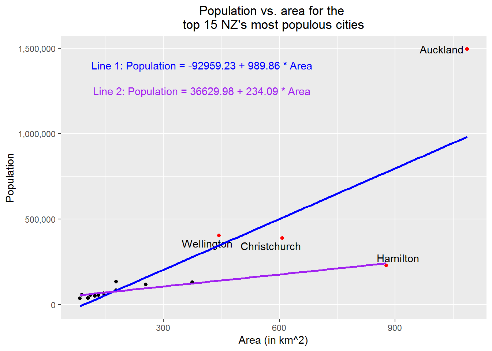
10.8 Creating side-by-side box plots
Roughly speaking, a box plot shows the five-number summary—i.e. minimum, first quartile, second quartile, third quartile, and maximum—of data. Plotting several box plots together, we have the so-called side-by-side box plot, which is useful for comparison of data among groups.
In the following example, we will create a side-by-side box plot for random numbers drawn from the standard normal distribution, the t distribution with five degrees of freedom, the uniform distribution on \((-3, 3)\), and the double exponential distribution with the probability density \[ f(y)=\frac{1}{2}\lambda e ^{-\lambda |y|}\ \hbox{for}\ -\infty <y<+\infty, \] where \(\lambda=\sqrt{\frac{2}{\pi}}\).
For our purpose, we need this
Technical note: We can show that if \(X\sim \hbox{Exp}(\lambda)\), \(U\sim \hbox{Uniform}(0, 1)\), and \(X\) and \(U\) are independent, then \[ Y=\left\{ \begin{array}{rl} -X, & \hbox{if}\ U\le 0.5,\\ X, & \hbox{if}\ U > 0.5, \end{array} \right. \] has a double exponential distribution; that is, the probability density function of \(Y\) is \[ f(y) = \frac{\lambda}{2}e^{-\lambda |y|}\ \hbox{for}\ -\infty < y < +\infty. \]
Example 9
rm(list = ls())
# load packages
library(dplyr)
library(tidyr) # for gather()
library(ggplot2)
# create a fake data set
set.seed(1234567)
fk_data <-
data.frame(Normal = rnorm(1000),
t_df_5 = rt(1000, df = 5),
Unif = runif(1000, -3, 3),
Exp = rexp(1000, rate = sqrt(2/pi)),
Unif_temp = runif(1000, 0, 1)) %>%
mutate(the_indi = if_else(Unif_temp <= 0.5, -1, 1)) %>%
mutate(Double_exp = Exp * the_indi) %>%
select(-Exp, -Unif_temp, -the_indi)
# prepare data for plotting
plotting_df <-
fk_data %>%
gather(key = distribution, value = rand_number, Normal:Double_exp)
# plot
p <-
plotting_df %>%
ggplot(aes(x = distribution, y = rand_number, group = distribution)) +
geom_boxplot() +
coord_flip() +
scale_x_discrete(breaks = c("Double_exp", "Normal", "t_df_5", "Unif"),
labels = c("Double Exponential",
"Standard Normal",
"t with df=5",
"Uniform on (-3, 3)")) +
# NB: use the above to change x-axis tick marks
labs(x = "Distribution", y = "", title = "Side-by-side box plot") +
theme(plot.title = element_text(hjust = 0.5))
print(p)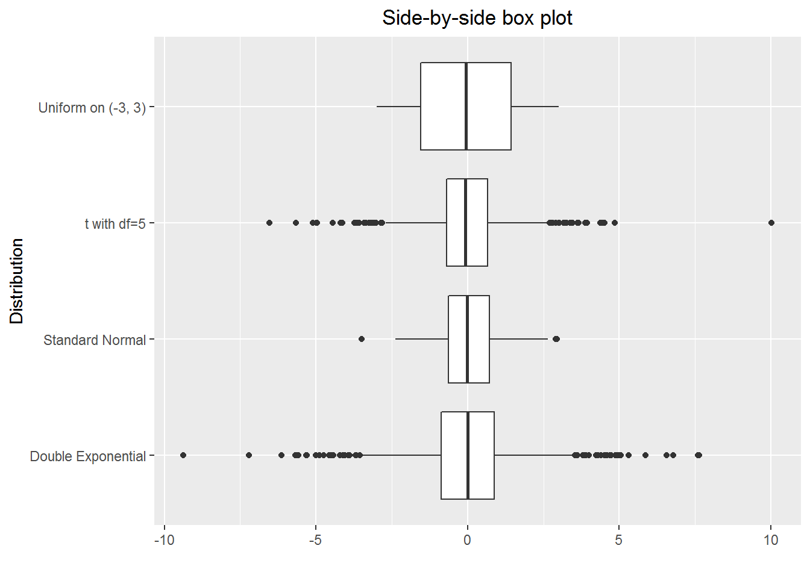
10.9 Creating grid plots
Grid plots allow us to show several (e.g. four) variables in one plot, and certainly they are useful. The key here is to use facet_grid().
Example 10
rm(list = ls())
# load packages
library(dplyr)
library(tidyr)
library(ggplot2)
# create a fake data set
## a helper function
set.seed(21072017)
create_year_data <- function(year = 2015, n = 20)
{temp_df <- data.frame(year = rep(year, n),
gender = sample(c("male", "female"), n, replace = TRUE),
stats_grade = rnorm(n, mean = 55, sd = 10),
math_grade = rnorm(n, mean = 60, sd = 10))
return(temp_df)
}
data_2016 <- create_year_data(year = 2016, n = 20)
data_2015 <- create_year_data(year = 2015, n = 20)
data_2014 <- create_year_data(year = 2014, n = 20)
fk_data <- bind_rows(data_2016, data_2015, data_2014)
# prepare data for plotting
plotting_df <-
fk_data %>%
group_by(year, gender) %>%
summarise(Stats = mean(stats_grade),
Maths = mean(math_grade)) %>%
ungroup() %>%
# make a long table
gather(key = subject, value = grade, -year, -gender) %>%
arrange(year)
# plot
the_title <- paste0("Averge maths and stats grades for\n",
"female and male students in 2014-2016")
p <-
plotting_df %>%
ggplot(aes(y = grade, color = gender)) +
geom_segment(aes(x = gender, xend = gender, y = 0, yend = grade)) +
geom_point(aes(x = gender, y = grade)) +
coord_flip() +
scale_x_discrete(limits = c("male", "female")) +
facet_grid(year ~ subject) +
labs(x = "", y = "Average Grade",
title = the_title) +
theme(plot.title = element_text(hjust = 0.5),
legend.title = element_blank(),
panel.background = element_rect(fill = "grey90"))
print(p)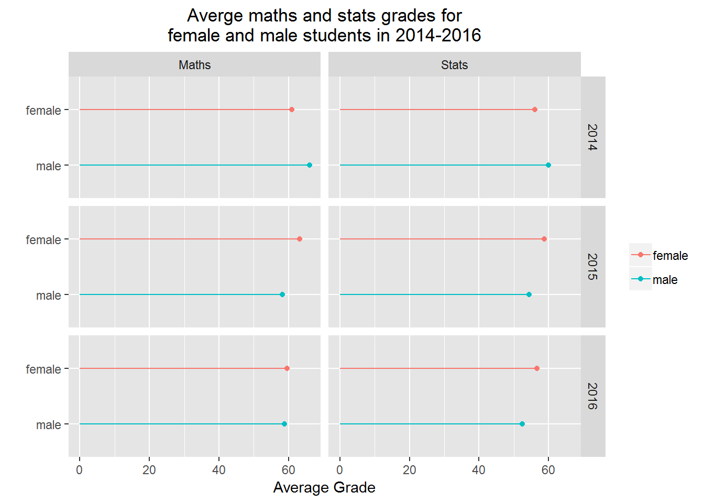
10.10 Creating a simple PCA plot
When we have an \(n\)-variate (\(n\ge 3\)) data set, where each column contains continuous type data, we often want to look at the cluster relationship among the \(m\) observations (or rows). For this purpose. we can make a PCA (Principal Component Analysis) plot. The fundamental idea here is that we map the \(n\)-dimension data to 2-dimension (PC1 and PC2) data and then make a scatter plot of the 2-dimension data.
Example 11
rm(list=ls())
# load packages
library(dplyr, quietly = TRUE)
library(ggplot2, quietly = TRUE)
# NB: We will use iris, which is a data set from R
(head(iris))## Sepal.Length Sepal.Width Petal.Length Petal.Width Species
## 1 5.1 3.5 1.4 0.2 setosa
## 2 4.9 3.0 1.4 0.2 setosa
## 3 4.7 3.2 1.3 0.2 setosa
## 4 4.6 3.1 1.5 0.2 setosa
## 5 5.0 3.6 1.4 0.2 setosa
## 6 5.4 3.9 1.7 0.4 setosa# do the mapping
## step 1: find the covariance
the_cov <- cov(iris[, 1:4])
## step 2: find the eigen values and vectors
the_eigen <- eigen(the_cov)
## Remark: steps 1 and 2 together is equivalent to
## PC <- prcomp(iris[, 1:4])
## step 3: mapping
map_2_PC1_PC2 <-
as.matrix(iris[,1:4]) %*% the_eigen[[2]][, 1:2] %>%
as.data.frame()
# check how much variance are expressed by PC1 and PC2
(the_proportions = the_eigen[[1]][1:2]/sum(the_eigen[[1]]))## [1] 0.92461872 0.05306648# prepare dataframe for plotting
temp_df <- data.frame(Species = iris[, 5])
plotting_df <-
bind_cols(map_2_PC1_PC2, temp_df) %>%
rename(PC1 = V1, PC2 = V2)
# plotting
ggplot(plotting_df, aes(x = PC1, y = PC2, color = Species)) +
geom_point()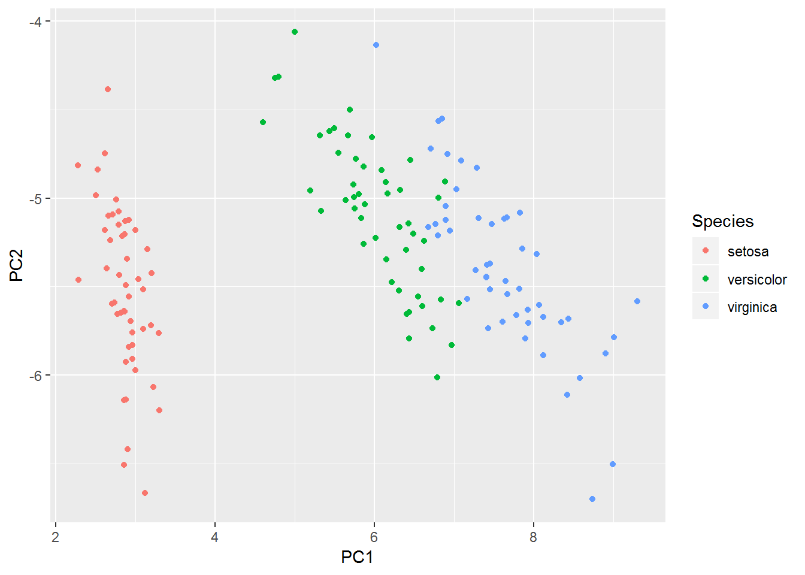
10.11 Creating time series plots
It is easy to create a time series plot. Here we pay attention to some “small” things.
- Make sure the time is labelled correctly on x-axis.
- If the values are for money and large, then we should show the $ sign and use “,” in the numbers for labeling y-axis.
- We often want to get the points connected to show that the points are related.
Example 12
rm(list = ls())
# load packages
library(ggplot2)
library(lubridate) # for dealing with data related to time
# create a fake data set
for_year <- 1997:2016
for_month <- rep(12, 20)
for_day <- rep(31, 20)
col_1 <- paste0(for_year, "-", for_month, "-", for_day)
col_2 <- rep(0, 20)
## simulated data from a random walk
set.seed(20170805)
epsilon <- rnorm(20, mean = 0, sd = 10000)
x0 <- 5*1e5
for(i in 1:20)
{col_2[i] <- x0 + epsilon[i]
x0 <- col_2[i]
}
fk_data <-
data.frame(EndOfYear = ymd(col_1),
Value_in_dollar = round(col_2, 0))
# plot data
p <-
ggplot(fk_data, aes(x = year(EndOfYear), y = Value_in_dollar)) +
# Note the use of function year()
geom_point() +
geom_line() +
scale_y_continuous(labels = scales::dollar) +
labs(x = "Year", y = "Market value", title = "Plot of a time series") +
theme(plot.title = element_text(hjust = 0.5))
print(p)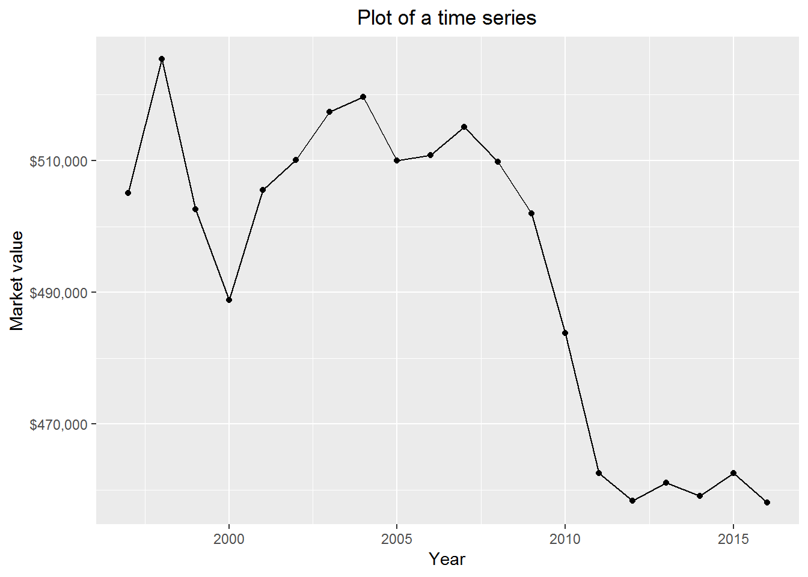
10.12 Showing pop-up’s
For exploratory data analysis, we may want our plot to have such a feature, which is when we hover the mouse on the plot some information will pop up. In the following example, I will show how to do it with plotly::ggplotly() (thanks to Chris Hansen for pointing this function to me.) Of course there are other useful R packages available for showing pop-up’s, such as googleVis and highcharter, if having an interest the readers can explore them.
Example 13
rm(list = ls())
# load packages
library(readr) # for read_csv
library(ggplot2)
library(plotly)
# read data in
the_url <- "https://raw.githubusercontent.com/LarryZhang2016/Data/master/NZ_cities.csv"
NZ_cities <- read_csv(the_url, skip =1)
p1 <-
ggplot(NZ_cities, aes(x = Area_in_km2, y = Population, fill = City_name,
text = paste0('City: ', City_name,
'<br>Area (in km^2): ', Area_in_km2,
'<br>Population: ', Population
))) +
geom_point() +
scale_y_continuous(labels = scales::comma) +
# NB: use the above to mark large numbers
labs(x = "Area (in km^2)", y = "Population Size",
title = paste0("Population vs. area for the top 15\n",
"NZ's most populous cities")) +
# NB: use paste0 to break a long line to two lines
theme(plot.title = element_text(hjust = 0.5),
legend.position="none",
plot.margin = unit(c(t = 1, r = 0.5, b = 0.5, l = 1.5), "cm"))
ggplotly(p1, tooltip = c("text")) %>% config(displayModeBar = FALSE)10.13 Putting plots in one panel
We create a few plots and want to put them together. It is handy to do so with gridExtra::grid.arrange(). (I thank Peter Ellis for pointing me to this function.)
Example 14
rm(list = ls())
# load packages
library(gridExtra)
library(ggplot2)
# a function for plotting probability density functions
plot_density <- function(func_name = dnorm, para = list(mean=0, sd=1),
domain = data.frame(x = c(-3, 3)),
title_lable = "PDF of N(0, 1)")
{p <- ggplot(domain, aes(x)) +
stat_function(fun = func_name, args = para, color = "red") +
labs(x = "x", y = "f(x)", title = title_lable) +
theme(plot.title = element_text(hjust = 0.5)) # make the title in center
return(p)
}
# plot four probability density functions
p1 <- plot_density()
p2 <- plot_density(func_name = dt, para = list(df=30),
title_lable = "PDF of t distribution with df=30")
p3 <- plot_density(func_name = dexp, para = list(rate = 1),
domain = data.frame(x = c(0, 10)),
title_lable = "PDF of Exp(1) distribution")
p4<- plot_density(func_name = dchisq, para = list(df=5),
domain = data.frame(x = c(0, 10)),
title_lable = "PDF of Chisq distribution with df=5")
# put the four plots together
grid.arrange(p1, p2, p3, p4, newpage = TRUE,
layout_matrix = matrix(1:4, byrow = TRUE, 2, 2))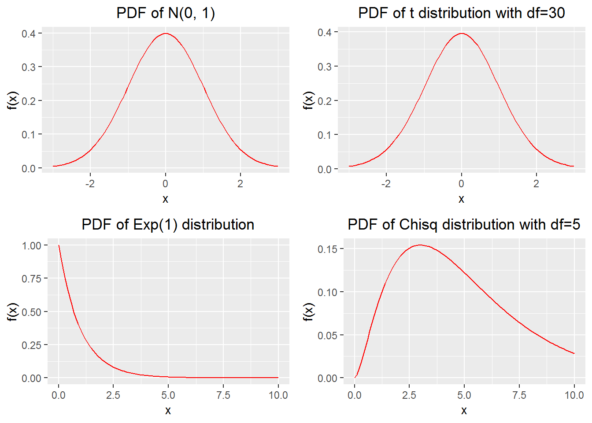